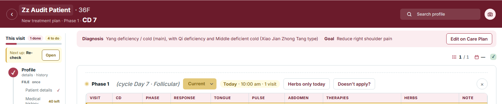
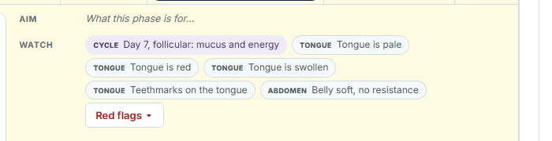
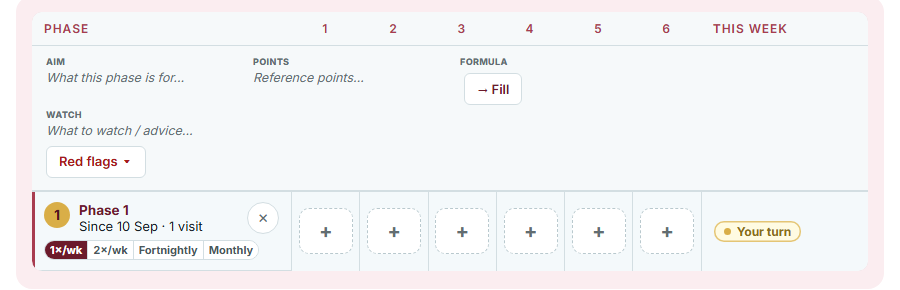

The Diagnosis and Goal on Treatment, the phase's Aim in the drawer, the Care Plan phase cells and the band's phase: today they read as words with a door elsewhere ("Edit on Care Plan", italic "What this phase is for…", "Click to edit" in the hover). The mock makes each value its own field, in place, the way Patient details already works. Measured on your 27 Oct export: 103 plans, a goal you typed on 3, a diagnosis on 4; 364 phase aims, all the template's words.
Treatment · the strip and its door

Treatment · the drawer's Aim

Care Plan · the phase cells

The band's "Phase 1" is a chip: one tap lists the plan's phases, the next tap moves her. The visit count stays a count (it is read from the logged visits, not typed).
Tap the words, type, Enter or tap away saves: the plan's goal becomes yours (the template's sentence is what shows until you type). "Edit on Care Plan" goes; "Patterns ›" stays as the door to the pattern work the Diagnosis is built from.
The Aim is the same field here and on Care Plan: one box, the placeholder inside it, grows as you type.
Aim
What this phase is for…Points
Reference points…Formula
→ FillWatch
What to watch / advice…Care Plan's phase cells already save on a click; they now look like what they are, fields.
"Edit on Care Plan" chip on Treatment (the strip's one door).
Italic placeholders that look like text; "Click to edit" and "Set in the Sessions table above" in the hover.
Care Plan's ✎ on the Treat card (the longer Diagnosis & goal editor with its template words and chips).
Patterns · Fang Bing Ren as the way the Diagnosis is built; typing in the field only sets your own words.
The locked session grid and the cadence chips.